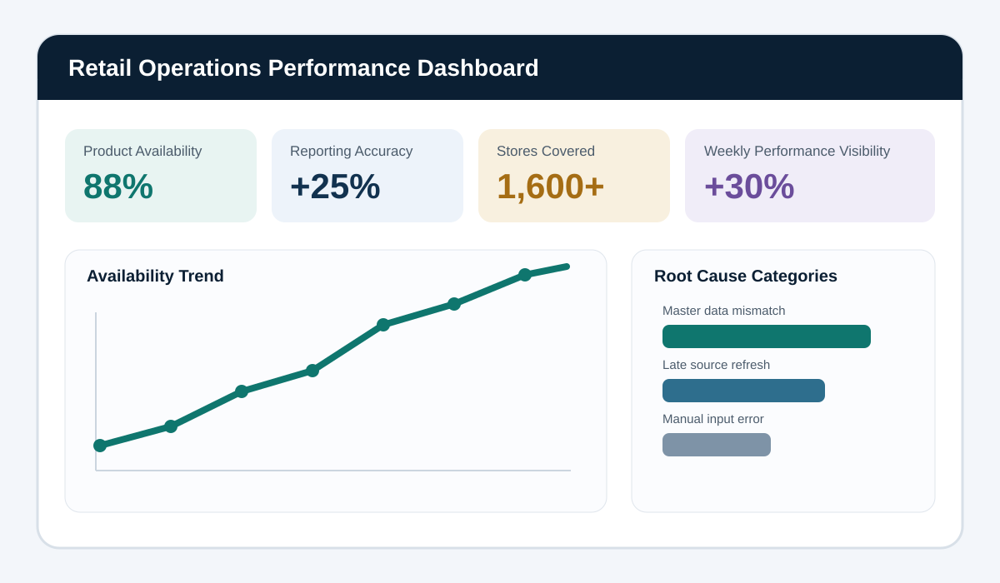

Business need
Operational leaders required a consistent weekly view of store performance, availability and data exceptions across a network of more than 1,600 locations.
Approach
- Defined KPIs and data definitions with business stakeholders.
- Validated source data and created reconciliation checks.
- Designed summary cards, trend views and exception categories.
- Structured the dashboard for weekly operational reviews and follow-up actions.
Illustrative measures
| Measure | Purpose | Example interpretation |
|---|---|---|
| Product availability | Track whether required products are available at store level. | Identify low-performing locations and recurring supply gaps. |
| Reporting accuracy | Monitor exceptions and reconciliation failures. | Prioritize data-quality corrections before leadership reporting. |
| Trend by week | Show whether interventions are improving outcomes. | Compare current performance against previous periods. |
Outcome
The underlying work improved weekly performance visibility and supported faster investigation of recurring exceptions. The visual shown here is a recreated portfolio mock-up rather than an employer dashboard.
Confidentiality: No employer data, proprietary logic or original dashboard files are included.